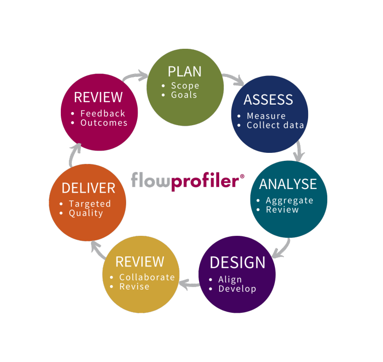

Data-driven development on tarkvaraarenduse lähenemine,
kus otsuste tegemine ja arendust juhib andmete analüüs.
Joonis:

Näide ühest case-vahendist:Google BigQuery
Head ja vead
| Head | Vead |
|---|---|
| Tagasiside | Nõuab andmete kogumise ja analüüsi oskust |
| vahem riski | andmete kvaliteedi probleem |